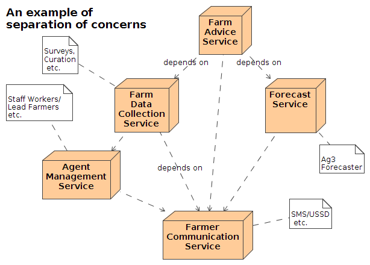
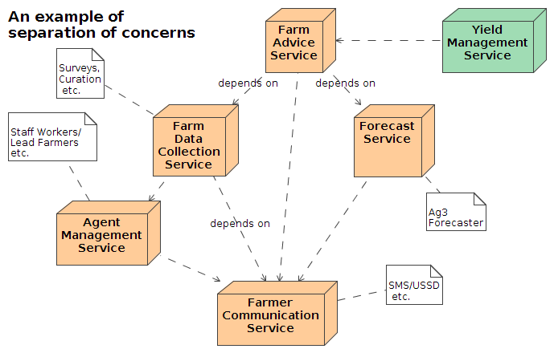
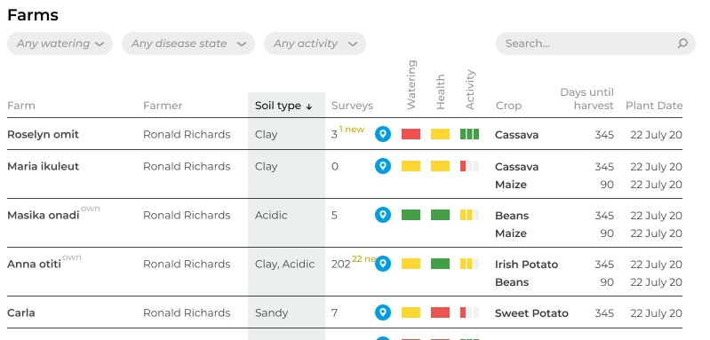
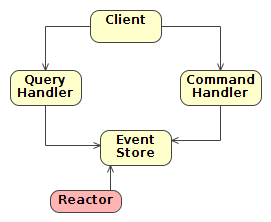

Created: 2020-11-23 Mon 18:54
blogposts, ai diseases, ai pests, ai whiteflies, scouts, scout surveys, posts, portal admins, portals, soil advice, pest infos, solds, crop infos, cold crops, saved locations, location crops, gardens, followings, following topics, following diseases, following questions, image, devices, user advises, advises, feedbacks, traps, trap collections, locust surveys, farm visits



In this context, events describe things that have happened that are of interest to us
(probably useful)
